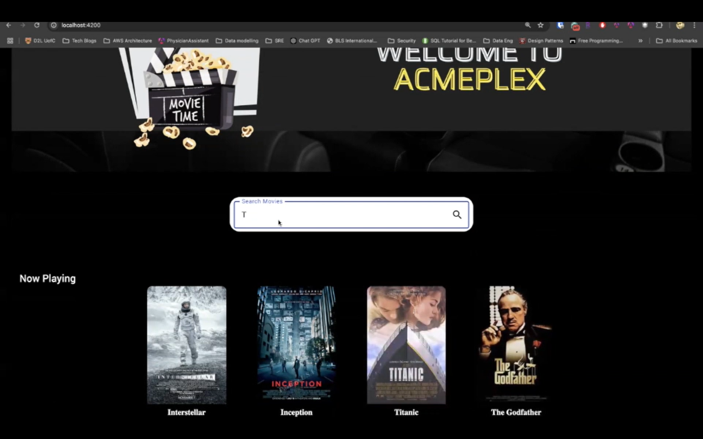
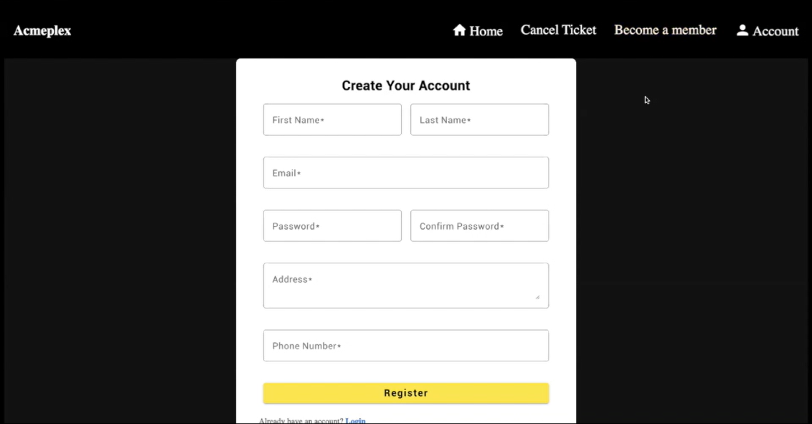
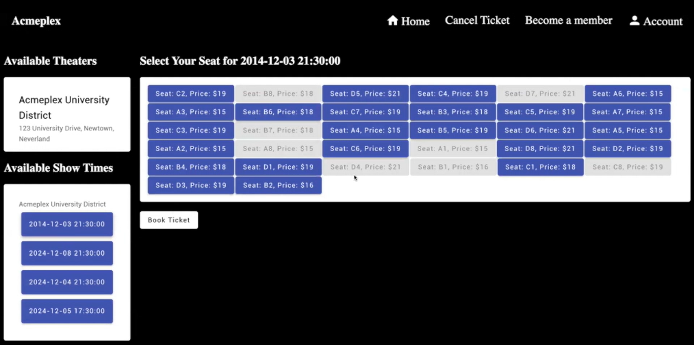
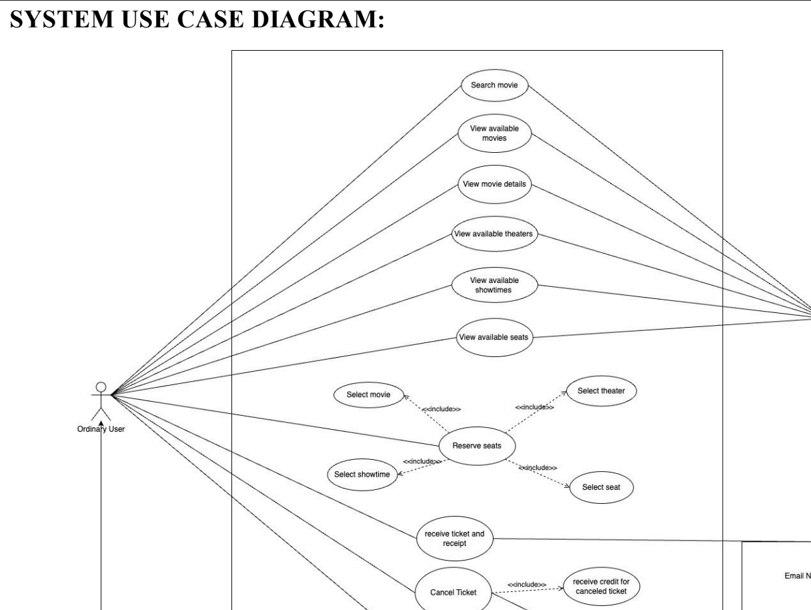

AcmePlex Movie Management System
AcmePlex is a comprehensive web application designed to replicate the end-to-end movie-going experience. The system manages everything from the user-facing movie browsing and seat reservation process to the backend administrative tools required for theater management.
Key Features:
- User Experience: A dynamic interface for browsing current and upcoming movies, viewing showtimes, and selecting specific seats in a real-time theater map.
- Booking & Payment Integration: A secure checkout flow that handles ticket purchases, and generates digital tickets.
- Administrative Dashboard: A private interface for theater managers to add new movie listings, modify showtimes, and track ticket sales analytics.
- Membership System: User authentication allowing customers to save their preferences, view booking history, and manage "AcmePass" memberships.
Technical Breakdown:
- Frontend Framework: Developed using Angular, leveraging its TypeScript-based architecture to ensure a scalable and type-safe codebase.
- Component Architecture: Created a modular design with reusable components for the movie gallery, seat selection grid, and user authentication forms.
- State Management & Routing: Utilized Angular Routing for seamless navigation between the movie listings and the booking flow, and managed complex application states (like seat reservation timers) using Services and RxJS.



